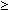

From the simulation of league tables, it seems clear that a spread of points in the table as great as that in the English Soccer League in 1999/2000 would be extremely unlikely if all teams were evenly matched.
To formally weigh the evidence, and to give guidance in situations where the results are less clear-cut, a hypothesis test is needed. The hypotheses of interest are:
| Null Hypothesis, H0 | All teams have the same probability of winning each match. |
| Alternative Hypothesis, HA | At least two teams have different winning probabilities. |
We base our test on the spread of points in the league table since differences in ability will tend to increase the difference in points between the top and bottom teams. In the 1999/2000 league, the standard deviation was 16.1, so the p-value for the test is
p-value = P(sd of league points ="> 16.1 when H0 is true)
Since this p-value cannot be easily evaluated theoretically, we must estimate it from a simulation. As in other situations where probabilities are estimated from simulations, a confidence interval based on the binomial distribution should be used.
Numerical Example
If 100 runs of the simulation produced 2 league tables whose standard deviation of points was greater than 16.1, the best point estimate of the p-value for the test would be 0.02.
However a confidence interval for the p-value would better express the results of the simulation. An exact 95% confidence interval for the p-value is between 0.0024 and 0.0704. Since the p-value could be as high as 0.0704, we should not conclude that H0 is not true. More runs of the simulation would be needed to properly form a conclusion.
In your own simulations, you are unlikely to have seen as many as 2 league tables out of 100 with such a high standard deviation, so your own conclusion was probably clearer. For example, if none of the 100 simulated league tables had a standard deviation as high as 16.1, the 95% confidence interval for the p-value would have been 0 to 0.036 -- at least moderately strong evidence of a difference in abilities of the teams.
More About Exact Confidence Intervals
Since p-values are often close to zero (at least if the alternative hypothesis is true), confidence intervals based on a normal approximation to the binomial are rarely appropriate. Exact binomial confidence intervals should be used instead.
We now explain how exact binomial confidence intervals are obtained. Consider again a set of simulated league tables in which 2 out of 100 had standard deviation greater than 16.1.
The number of league tables with standard deviation of 16.1 or higher must have a binomial distribution with π equal to the p-value that we are trying to estimate. The diagram below shows two copies of this binomial barchart, plus a slider that can be used to adjust the unknown value of π.
The top barchart highlights the probability of two or more 'successes' (e.g. runs of the simulation with standard deviation ="> 16.1) and the bottom barchart shows the probability of two or fewer 'successes'.
Drag the slider to verify that both probabilities are greater than 0.025 when π is between 0.003 and 0.070 (to the accuracey that the diagram allows). This is the 95% confidence interval for π. For these values of π, the observed count of 2 'successes' is not particularly unusual.
For any value of π greater than 0.070, the probability of getting as few as 2 'successes' is below 0.025, so π > 0.070 is not included in the confidence interval. Similarly, for any value of π below 0.003, the probability of 2 or more 'successes' is below 0.025 so π < 0.070 is not included in the confidence interval. In other words, a 2-tailed test at the 5% significance level would reject values of π over 0.070 or under 0.003.